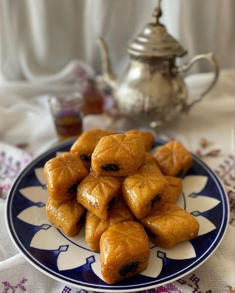

Une bombe calorique certes, mais une bombe quand même!
Makroudh

Ingrédients:(pour 4 personnes)
Cannelle
Miel
Pâte de dattes
Sucre
Eau
0.5 volume de beurre fondu
Fleur d'oranger
1,5 volume de semoule
Réalisation:
Difficulté: Moyen
Préparation: 10 min
Cuisson: 15min
Temps Total: 15min
Préparation:
Dans un saladier, mettre la semoule, le beurre et de la fleur d'oranger. Commencer par bien sabler la pâte pour que la semoule s'imprègne bien du beurre.
Incorporer de l'eau petit à petit tout en pétrissant jusqu'à Ce que la pâte se tienne bien.
Laisser reposer la pâtes.
Pétrir la pâte de dattes. Ajouter de la cannelle et continuer à pétrir.
Prendre un morceau de pâte et le rouler pour former un boudin assez long,(si la pâte s'effrite ou que vous avez du mal à la rouler c'est qu'elle manque d'eau).
Faire un boudin de même longueur avec la pâte de dattes mais plus fin.
Faire une sorte de gouttière avec le pouce au centre du boudin de pâte et y placer le boudin de pâte de dattes.
Rabattre les bords de la pâte sur la pâte de dattes pour l'enfermer complètement.
Rouler le boudin pour bien le refermer et l'aplatir légèrement avec la paume de la mains.
Couper en diagonale des morceaux 3 - 4 cm.
Refaire la même opération tant qu'il vous reste de la pâte.
Plonger dans un bain d'huile vos Makroudhs.
Laisser refroidir légèrement et tremper dans un sirop de sucre.
Pour le sirop de sucre :
Mettre du sucre avec une cuillère à soupe de miel et un peu d'eau dans une casserole.
Porter à ébullition sans laisser brunir.
Personnellement je rajoute un peu de fleur d'oranger dans le sirop de sucre.